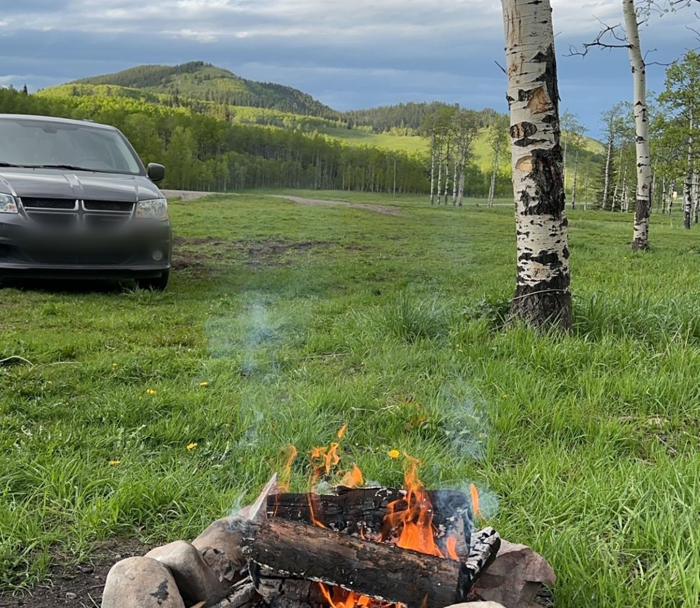
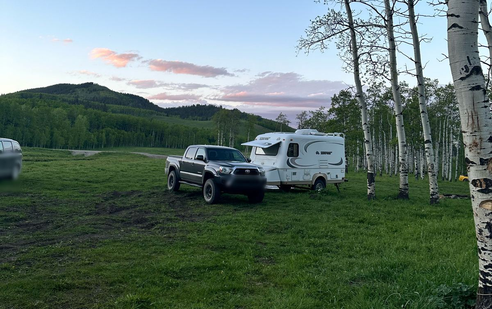

🔥 Crown Land & Random Camping with Kids in Alberta
Random camping on crown (public) land means no hookups, no reservations and no neighbours, just you, the hills and the stars. Here's what families need to know before heading out in the Eastern Slopes. We don't name spots: part of the fun is finding your own, and it helps keep favourite places from being overrun.
Rules change. Last checked Oct 14, 2026 from alberta.ca. Always check the official links before you go.
🎫 Public Lands Camping Pass
Adults 18 and older need a pass to random camp on public land in the Eastern Slopes pass area. Kids under 18 don't.
- $20 per person for 3 days, or $30 per person for a year, plus a $3.25 processing fee and GST.
- You also need a one-time Wildlife Identification Number (WIN); see AlbertaRELM for the current fee.
- Buy online at AlbertaRELM or from a licence issuer.
- Not needed in paid campgrounds, provincial parks, or inside the Kananaskis Conservation Pass area (which needs its own pass to park).
📅 The 14-day limit
You can stay up to 14 days in one spot. After that, move your camp at least 1 km and stay away from the old spot for 72 hours.
- Camp at least 30 m from lakes and streams, 100 m from oil and gas sites, and 1 km from any provincial park, provincial recreation area or public land recreation area.
- In some Public Land Use Zones you can't camp within 1 km of a road.
- Random camping isn't allowed in national parks.
🔥 Fire bans
Fire bans and restrictions change quickly, sometimes overnight. Check the official map before you leave and again when you arrive.
- Use an existing fire ring, keep it small, and never leave it.
- Drown, stir and feel: the ashes should be cold to the touch.
- Pack a camp stove in case fires are banned.
🐻 Bear safety
- Carry bear spray where everyone can reach it, and show older kids how it works.
- Keep a clean camp. Store food, garbage, toothpaste and pet food in a vehicle or hard-sided trailer, never in the tent.
- Cook and eat away from where you sleep.
- Kids stay within sight, make noise on walks, and never run from a bear.
🌱 Leave no trace with kids
- Make kids the "trash rangers": a bag each, and a prize for the most micro-trash found.
- Pack out everything, including toilet paper and hygiene products. A portable toilet is the easiest option with kids; for short stops, dig a hole at least 15 cm deep, at least 70 m from water and away from trails, and cover your waste.
- Leave rocks, flowers and antlers where you find them. Take photos instead.
- Use existing fire rings and campsites rather than making new ones.
🐄 Cattle and gates
- Much public land in the foothills is grazing lease. Cows may wander through camp.
- Leave gates and fences as you find them, open or closed.
- Give cattle space, especially cows with calves, and keep dogs leashed and under control.
- Don't camp in front of a gate, corral or watering spot.
- Report problems on public land to 310-LAND (5263).

Prefer hookups and a playground? See our Foothills family campgrounds. Help look after the land you camp on with a family volunteer day.
🏕️ Get the free family camping checklist
A printable checklist for camping with kids, plus a new outdoor idea and scavenger hunt every week. Unsubscribe anytime.
Get the free checklistCrown land camping FAQ
- Do I need a pass to camp on crown land in Alberta?
- Yes, in the Eastern Slopes pass area: anyone 18 or older who random camps needs a Public Lands Camping Pass. Kids under 18 don't. It's $20 per person for 3 days or $30 per person per year, plus a $3.25 processing fee and GST. You also need a one-time Wildlife Identification Number (WIN); see AlbertaRELM for the current fee. Buy it on AlbertaRELM or from a licence issuer. It isn't needed in paid campgrounds, provincial parks or recreation areas, or inside the Kananaskis Conservation Pass area.
- How long can I stay?
- Up to 14 days in one spot. After that, move your camp at least 1 km and stay away for 72 hours.
- Can we have a campfire?
- Only if there's no fire ban or restriction where you are. Check the official Alberta fire ban map before every trip, use an existing fire pit or a portable fire receptacle, and bring a camp stove in case fires are banned. National parks such as Banff run their own fire bans.
- Do we need a Kananaskis Conservation Pass?
- Yes, if you park in Kananaskis Country or the Bow Valley, including at campgrounds. It's $15 a day or $90 a year per vehicle, and one pass covers a towed trailer and all passengers. You don't need one just to drive through, or in a few areas such as McLean Creek and the Ghost. Camping fees still apply.
- Where are we allowed to random camp?
- On public land, random camping is allowed unless signs say otherwise. Camp at least 30 m from lakes and streams, at least 100 m from oil and gas facilities, and at least 1 km from any provincial park, provincial recreation area or public land recreation area. In the Kananaskis, McLean Creek, Sibbald and Cataract Creek Public Land Use Zones (and where posted in others), you can't camp within 1 km of a road. Random camping isn't allowed in national parks; there you camp only in designated sites with a permit.
- What do we do for a toilet?
- Pack out all garbage, toilet paper and hygiene products. For short stops, dig a hole at least 15 cm deep, at least 70 m from water and away from trails, and cover your waste. For longer stays, bring a portable toilet and pack out the waste.
Last checked Oct 14, 2026. "(unconfirmed)" means we couldn't confirm it on an official page.